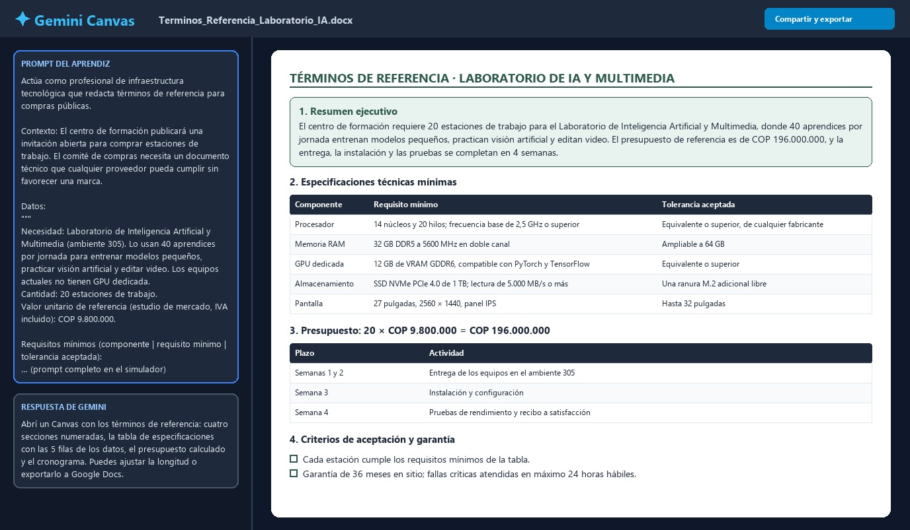
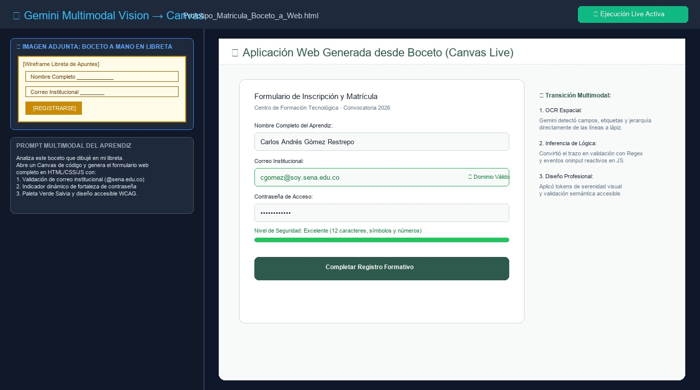

Inmersión Práctica en Inteligencia Artificial Aplicada
Ruta formativa de cuatro días diseñada para pasar del consumo básico de texto a la automatización agéntica, la construcción de software asistido, la gobernanza institucional y la sustentación en vivo.
🗺️ Mapa Curricular del Curso (Evolución Día a Día)
La capacitación avanza de forma acumulativa: cada día provee los insumos y criterios necesarios para el siguiente nivel de complejidad.
| Día & Enfoque | Jornada de la Mañana (07:00 - 12:00) | Jornada de la Tarde (13:00 - 17:00) | Entregable Observable |
|---|---|---|---|
| Día 1 Fundamentos & Datos |
Ecosistema & Prompting Canónico • LLMs Nube vs. Locales (Ollama / LM Studio) • Privacidad de datos en la oficina • Fórmula R-C-I-R-F & Few-Shot |
Ofimática & RAG Documental • Gemini / Outlook en comunicaciones • NotebookLM: análisis de manuales y normas • Citas a páginas exactas sin alucinaciones |
Acta Limpia R-C-I-R-F + Libreta NotebookLM |
| Día 2 Multimedia & Marca |
Laboratorio Visual & Video • Ideogram AI: tipografía legible en español • Consistencia de personajes y paletas • Animación y video corto (Kling / Runway) |
Presentaciones & Locución IA • Generación de diapositivas en Gamma • Síntesis de voz natural (TTS) • Ensamble de cápsula en Canva |
Cápsula Formativa Multimedia (2 min) |
| Día 3 Código, APIs & Legal |
Agentes & Diagnóstico del Sistema • Asistentes agénticos (Antigravity / CLI) • Diagnóstico de hardware del PC • Clasificación masiva de 200 archivos |
Web en 3 Archivos & Gobernanza Técnica • Regla HTML + CSS + JS (Panel de Instructores) • Visualización en tiempo real con Chart.js • Propiedad Intelectual, Licencias & Seguridad de APIs |
Panel Web en 3 Archivos + Script de Archivos |
| Día 4 Ética, Gems & Cierre |
Ética, Sesgos & Asistentes a Medida • Dilemas Éticos, Sesgos & Gobernanza Corporativa • Creación de Gems / Custom GPTs socráticos • System Prompts restrictivos y de tutoría |
Sprint Integrador & Demo Day • Sprint de ensamble en parejas (solución real) • Demo Day en vivo: 5 min por solución • Rúbrica de evaluación y balance final |
Prototipo Funcional Sustentado en Vivo |
Estrategia para Sostener la Energía (7:00 a.m. a 5:00 p.m.)
- 7:00 a.m. – 7:30 a.m.: Llegada y calibración técnica. Pon música instrumental suave de fondo y confirma que todos tengan sesión iniciada.
- El peligro de la 1:00 p.m.: Tras el almuerzo baja la concentración. Nunca inicies la tarde con teoría. Arranca con un desafío competitivo en parejas de 15 minutos.
- Regla de los 20 minutos: Ninguna explicación teórica debe superar los 20 minutos continuos sin que los participantes abran una herramienta y tecleen.
Día 1 · Modelos de Lenguaje, Prompting Profesional y Análisis Documental
Comprende cómo razonan los LLMs, erradica el uso informal de los chats y domina el análisis de documentos extensos sin alucinaciones.
Preguntas Detonantes para Romper el Hielo (07:00 a.m.)
- "¿Quién de ustedes le ha pedido a una IA una ley o un dato numérico y se ha dado cuenta de que se lo inventó?" (Abre el debate sobre las alucinaciones).
- "¿Por qué un chat local como LM Studio u Ollama es vital si manejamos datos protegidos de aprendices o contratos?" (Introduce privacidad y soberanía de datos).
Sesión 1: Ecosistema y Método Canónico CRTT+L
Comparativa entre modelos en la nube (Gemini, Claude, ChatGPT) y modelos locales de escritorio (LM Studio / Ollama). Estructuración formal de instrucciones.
- Diferencias entre buscador web y modelo probabilístico de lenguaje.
- Privacidad y datos sensibles: cuándo usar nube y cuándo modelos locales.
- Método Canónico CRTT+L: Contexto, Rol, Tarea, Tono y Límites (R-C-I-R-F).
- Few-Shot Prompting (enseñar mediante ejemplos de entrada y salida).
Sesión 2: Ofimática Inteligente y NotebookLM
Integración en correo electrónico y procesamiento de documentos extensos (PDFs, manuales y reglamentos) con anclaje a fuentes verificadas.
- Redacción asistida en Outlook / Gemini para correos institucionales.
- Configuración de Google NotebookLM para auditoría curricular y normativa.
- Extracción de citas exactas por número de página.
- Generación automática de guías de estudio y síntesis de audio.
🛠️ Constructor Interactivo de Prompts CRTT+L
Diligencia cada componente de la fórmula canónica para generar un prompt profesional listo para copiar.
✓ Los cinco pilares del método CRTT+L están cubiertos. El modelo tendrá directrices inequívocas.
🎯 Reto Práctico del Día: Acta Limpia de Reunión
Abre el archivo de notas desordenadas del comité y pásalo por tu prompt en el chat de tu preferencia. Compara cómo responde un prompt genérico frente al prompt R-C-I-R-F.
🔍 Resultado Esperado Observable: Acta Limpia con Fórmula R-C-I-R-F
▼Comprueba tu ejecución en el chat contra este estándar de oro. Si tu prompt fue preciso, obtendrás una tabla limpia sin chismes de pasillo ni datos inventados:
El comité acordó gestionar la puntualidad de rutas de la ficha 2871 con la empresa transportadora, programó la revisión de fuentes de poder en salas 3 y 4 antes del 22 de marzo, fijó entrega de listas para apoyo de sostenimiento para el 16 de marzo a las 2:00 p.m. e inició cotizaciones para 15 tarjetas de desarrollo SENNOVA.
Tabla de Compromisos:| ID | Compromiso | Responsable | Límite |
|---|---|---|---|
| 01 | Insistir ante transporte | María Fernanda | Viernes |
| 02 | Revisar fuentes salas 3 y 4 | Carlos Gómez | Martes |
| 03 | Listas apoyo sostenimiento | Carlos y Andrea | Lunes 2:00 p.m. |
| 04 | 3 Cotizaciones SENNOVA | Carlos Gómez | Miércoles 18 |
"En la reunión Carlos llegó tarde por problemas de audio. Hablaron de que los buses no pasan y la gente se queja. Hay que arreglar unos computadores que andan muy lentos y ver qué pasa con la plata de bienestar..."
⚠️ Fallas críticas: Mezcla anécdotas irrelevantes, omite responsables individuales, borra las horas límite y carece de estructura tabular para seguimiento.📑 Resultado Esperado: Citas Exactas con NotebookLM
▼Al cargar manuales o reglamentos institucionales en Google NotebookLM, la respuesta debe contener enlaces directos a las páginas exactas de la fuente:
Respuesta con anclaje a fuentes verificadas:
1. Ante la inasistencia injustificada, el instructor debe emitir reporte formal dentro de los dos (2) días hábiles siguientes [Manual de Convivencia, Cap. IV, Art. 12, Pág. 18].
2. El aprendiz tiene derecho a radicar justificación médica en la coordinación académica [Reglamento del Aprendiz, Cap. V, Pág. 24].
🎨 Gemini Canvas Lab: Coescritura, Prototipado y Edición Quirúrgica
Transforma el chat conversacional en un espacio de trabajo colaborativo en pantalla dividida (Split Screen). En Gemini Canvas, la IA coescribe documentos técnicos, ejecuta aplicaciones web interactivas en vivo, estructura matrices exportables a Google Sheets, refina algoritmos en Python y aplica edición quirúrgica sin reescribir todo el proyecto.
Guion del Facilitador
Estrategia Pedagógica para la Sesión de Gemini Canvas
(Clic para contraer o desplegar)
Estrategia Pedagógica para la Sesión de Gemini Canvas
- El error del chat lineal: Muestra en el proyector cómo en un chat normal, al pedir corregir un error gramatical en la página 3, la IA vuelve a escribir las 3 páginas completas. Luego demuestra cómo en Canvas, al seleccionar solo ese párrafo con el cursor, la corrección ocurre en 3 segundos sin tocar el resto.
- Dinámica de aula de 15 minutos: Pide a los aprendices abrir
gemini.google.com, pegar el prompt de la Posibilidad 2 (Prototipado Web) o de la Posibilidad 7 (Algoritmos en Python) y activar la previsualización en vivo para que experimenten el asombro de ver una solución ejecutándose en directo. - Pregunta detonante: "¿Qué diferencias de productividad encuentran entre trabajar con un documento en Google Docs tradicional versus iterarlo en Gemini Canvas con control reactivo de longitud y tono?"
🚀 ¿Cómo activar y utilizar Canvas en tu cuenta de Gemini?
Sigue estos tres pasos para habilitar el espacio de trabajo en cualquier navegador:
Iniciar y Solicitar
Ingresa a gemini.google.com con tu cuenta y activa Canvas en la barra del cuadro de texto (en algunas cuentas está dentro del menú Herramientas). Luego pega o escribe tu prompt. Si olvidas activarlo, Gemini también trabaja en Canvas cuando el prompt lo pide, por ejemplo: «En Canvas, redacta…».
Trabajo en Pantalla Dividida
La interfaz se divide automáticamente: a la izquierda tienes el chat para conversar o dar nuevas indicaciones, y a la derecha el lienzo interactivo donde se despliega tu artefacto en tiempo real.
Refinamiento y Exportación
Usa la barra superior de Canvas para ajustar longitud, cambiar tono o exportar a Google Docs y Google Sheets con un solo clic. También puedes seleccionar cualquier frase con el cursor para editarla en caliente.
🖥️ Simulador Interactivo de Gemini Canvas
Explora cada una de las 12 posibilidades con su prompt exacto, los controles propios de Canvas y la imagen de alta fidelidad del resultado esperado.
Cargando prompt maestro...
¡Entendido! He generado el documento solicitado en el panel interactivo de Canvas a la derecha. Puedes editarlo directamente, usar la barra de herramientas superior para ajustar longitud o tono, o pedirme modificaciones específicas.

🧪 Ejercicios prácticos del modo: 1. Redacción & Documentos
Cada modo trae dos ejercicios completos para resolver en Gemini Canvas. Copia el prompt (ya incluye los datos), sigue los pasos y marca los criterios a medida que tu resultado los cumpla. Cambia de modo con las pestañas del simulador.
ℹ️ Las personas, cifras y documentos de estos ejercicios se prepararon para aprender y no contienen registros reales.
📷 Simulador de Visión Multimodal: De Boceto a Canvas en Vivo
Experimenta cómo Gemini procesa una fotografía de trazos manuscritos en una libreta o pizarra y genera un artefacto interactivo funcional en el lienzo.

- Campos detectados:
Nombre Completo,Correo Institucional,Contraseña. - Acción principal: Botón primario de envío tipo Pill
Registrarse. - Restricción implícita: Validación estricta de dominio
@soy.sena.edu.co.
"Analiza este boceto a mano en mi libreta. En Canvas, genera el formulario web responsivo en HTML/CSS/JS con validación de correo institucional y medidor de seguridad de contraseña."
🤖 Gem Studio: Constructor y Calibrador de Asistentes Gems en Vivo
Diseña las instrucciones del sistema (*System Prompt*), fija restricciones éticas y pon a prueba a tu propio asistente personalizado antes de crearlo en tu cuenta de Gemini.
Inspección de Captura de Alta Fidelidad
Resultado esperado en Gemini CanvasValidador de Accesibilidad y Contraste WCAG 2.2
Sistema de Serenidad Visual SENA · Norma ISO/IEC 40500Verifica el ratio de contraste matemático de la paleta según el algoritmo oficial W3C. La norma exige mínimo 4.5:1 para texto normal y 3.0:1 para texto grande o componentes gráficos.
1. Pares Oficiales del Portafolio SENA
| Elemento / Uso | Texto | Fondo | Ratio | Diagnóstico WCAG |
|---|---|---|---|---|
| Texto en Verde Salvia | #2D5A4C | #F8FAF9 (Arena) | 5.41 : 1 | ✓ Supera AA |
| Lectura Principal (Pizarra) | #1E293B | #F8FAF9 (Arena) | 12.82 : 1 | ✓ Supera AAA |
| Botón de Acción Primaria | #FFFFFF (Blanco) | #2D5A4C (Salvia) | 5.52 : 1 | ✓ Supera AA |
| Alerta Formativa (Ámbar) | #D97706 | #FFFFFF (Blanco) | 3.12 : 1 | ⚠️ Solo texto grande ≥18pt |
2. Laboratorio de Prueba en Tiempo Real
Desglose de Ingeniería de Prompt: Imagen 3 en Gemini
Generación de Maquetas UI/UX de Alta Fidelidad sin DeformacionesImagen 3 dentro de Gemini Canvas destaca por su fidelidad gráfica y renderizado de texto. Para maquetas de software, desglosa el prompt en 5 bloques canónicos:
"A clean mobile app UI design of a student learning portfolio on a modern smartphone screen..."
"Sage green (#2D5A4C) primary accents, warm linen background, slate gray text hierarchy..."
"Showing daily progress dashboard with modular KPI cards, evidence submission pill button, clean typography..."
"Minimalist editorial digital product mockup, soft natural studio lighting, high resolution, centered composition..."
"No physical human hands holding phone, no distorted text, no neon glows, no skewed perspectives."
Inspector de Código Fuente / Mermaid
Sintaxis canónica para Canvas y documentaciónDía 2 · Laboratorio Multimedia, Consistencia Visual y Video
Pasa del texto a la imagen y al video. Genera piezas gráficas con tipografía nítida en español, diseña presentaciones interactivas en minutos y sintetiza voces profesionales.
Dinámica Energizante Post-Almuerzo (01:00 p.m.)
- El juego del "Ojo Clínico": Proyecta 4 imágenes en la pantalla (2 fotos reales de laboratorios y 2 creadas con IA). Da 60 segundos a los equipos para encontrar manos con 6 dedos, reflejos incoherentes o tipografía distorsionada. Esto despierta la sala de inmediato.
- Advertencia sobre cuotas: Recuerda a los participantes no gastar todos los créditos en prompts de prueba al azar; planear primero el prompt en texto antes de generar.
Sesión 1: Generación Visual y Consistencia
Uso de Ideogram AI para lograr texto legible dentro de las imágenes y técnicas de ancla de estilo para colecciones gráficas armónicas.
- Por qué la mayoría de IAs deforman el texto y cómo Ideogram lo resuelve con comillas dobles.
- Parámetros de estilo: paleta de colores, iluminación difusa y composición 16:9.
- Animación de imágenes fijas con generadores de video (Kling, Luma o Runway).
Sesión 2: Presentaciones Ágiles y Locución
Creación de diapositivas automatizadas con Gamma y síntesis de voz natural para narrar cápsulas de microaprendizaje.
- Generación de presentaciones completas a partir de esquemas de texto en Gamma.
- Síntesis de voz (TTS) con acento latino neutro o colombiano (ElevenLabs o Clipchamp).
- Ensamble final en Canva para producir una píldora formativa de 2 minutos.
🎨 Prompts Modelo para Práctica de Generación Visual
🎨 Resultado Esperado Observable: Afiche Tipográfico en Ideogram AI
▼Comprueba las características técnicas del resultado generado contra la rúbrica de calidad visual:
- Tipografía exacta en español: El texto
"AULA DE INNOVACIÓN"aparece en la parte superior sin letras borrosas ni sustituciones de caracteres. - Paleta de serenidad: Predominio del verde salvia (#2D5A4C) y blanco marfil, sin saturación chillona.
- Composición limpia: Espacio despejado para incrustar logos institucionales y proporción 16:9 o vertical.
- Texto deformado: Palabras ininteligibles como "AULAA INOVATIONN" o jeroglíficos.
- Estilo estridente: Neones deslumbrantes que fatigan la vista.
- Artefactos: Dedos extras o circuitos incoherentes.
🎙️ Resultado Esperado: Estructura de Microcápsula Multimedia (2 Minutos)
▼Cronograma temporalizado segundo a segundo para ensamblar las diapositivas de Gamma con la locución TTS:
| Segmento | Duración | Contenido Visual (Gamma/Canva) | Locución (Voz TTS) |
|---|---|---|---|
| 0:00 - 0:25 | 25 seg | Portada con afiche Ideogram y título animado | Gancho: Planteamiento del problema real de oficina |
| 0:25 - 1:15 | 50 seg | 3 diapositivas explicativas de la fórmula R-C-I-R-F | Desarrollo conceptual claro y sin rodeos |
| 1:15 - 1:45 | 30 seg | Captura de pantalla de la tabla Markdown generada | Evidencia del resultado profesional medible |
| 1:45 - 2:00 | 15 seg | Llamado a la acción con QR al repositorio | Despedida institucional y cierre motivador |
Día 3 · IA Agéntica, Construcción Web en 3 Archivos y Seguridad de APIs
Descubre el poder de los agentes que ejecutan herramientas reales en tu computador. Automatiza el diagnóstico del sistema y la clasificación masiva de 200 archivos, construye un panel web interactivo aplicando la regla de los 3 archivos y domina el marco legal de propiedad intelectual, licencias Open Source y consumo seguro de APIs comerciales.
Desmitificando el Código y la Propiedad Intelectual (07:00 a.m. y 03:00 p.m.)
- Tranquiliza al grupo: Muchos participantes sienten pánico al ver una terminal. Explica que la IA actúa como su arquitecto y programador junior; ellos solo deben describir el resultado deseado en español claro y verificar la salida con criterios observables.
- La pregunta legal clave: Lanza esta pregunta a las 3:30 p.m.: "Si la IA escribió este código, ¿quién es el dueño: ustedes, la empresa de IA o nadie?" Con esto introduces la jurisprudencia de derechos de autor (Ley 23 de 1982) y los riesgos de contaminación por licencias GPL/Copyleft.
Sesión 1: Agentes y Automatización de Archivos
Entornos agénticos (Antigravity, Claude Code o terminal asistida). Diagnóstico de componentes del PC y ordenamiento automático de 200 archivos desordenados.
- Diferencia entre chat conversacional y agente con permisos de ejecución y herramientas locales.
- Script guiado de diagnóstico: CPU, RAM, almacenamiento y cuellos de botella en salas de cómputo.
- Reto de clasificación masiva: ordenar por tipo, evitar sobrescrituras y generar un reporte HTML.
Sesión 2: Web en 3 Archivos, Licenciamiento & APIs
Construcción del Panel de Instructores en HTML, CSS y JS, junto con el marco legal de propiedad intelectual y seguridad de credenciales.
- Estructura web sin dependencias complejas y visualización interactiva de métricas.
- Propiedad Intelectual del código generado: Titularidad de obras humanas vs. dominio público.
- Riesgo de Copyleft: Cómo evitar que la IA autocomplete código con licencias GPL contaminantes.
- Consumo de APIs comerciales: Prohibición de quemar claves (`API Keys`) en el código y control de presupuesto.
🧭 Mapa Conceptual: ¿Cómo funciona un Agente, la Regla de 3 Archivos y el Patrón BFF?
Antes de ejecutar código, comprende las tres arquitecturas que hacen posible pasar de una conversación de texto a un software real, seguro y mantenible.
Chat Conversacional vs. Agente de Software
Un chat normal solo predice palabras sin ver tu computador. Un agente opera en un bucle controlado: lee archivos reales, ejecuta un script o prueba y verifica el resultado antes de responderte.
La Regla de los 3 Archivos Web
Para crear tableros y herramientas duraderas sin instaladores complejos, dividimos la aplicación en tres archivos con responsabilidades únicas que se enlazan entre sí.
⚖️ Módulo Estratégico: Propiedad Intelectual, Licenciamiento y Seguridad en APIs
Marco legal, riesgo de contaminación por licencias recíprocas y arquitectura para el consumo seguro de modelos comerciales.
Por jurisprudencia internacional (US Copyright Office) y nacional (DNDA / Ley 23 de 1982), solo las personas físicas pueden ser autoras. El código generado 100% por un prompt simple no es protegible y pasa a ser de dominio público.
Aporte protegible: La protección recae exclusivamente sobre la arquitectura global, la lógica de negocio humana y las adaptaciones sustanciales escritas por el desarrollador.Los modelos pueden memorizar y regurgitar código bajo licencias recíprocas fuertes (GPL / AGPL). Incorporar estos fragmentos en un software propietario genera riesgo de contaminación viral de licencia.
Control técnico: Activa siempre el filtro de coincidencia de código público (*Public Code Match Filter*) en Copilot/Cursor y ejecuta auditoría de dependencias (SCA).Prohibición absoluta de quemar (*hardcodear*) claves de API (sk-..., AIza...) en el frontend o repositorios. Bots automatizados escanean Git y pueden comprometer tu cuenta en segundos.
El cobro en APIs se tasa por tokens. Un bucle infinito en un script puede costar cientos de dólares. Configura techos de gasto duros (*Hard Limits*), alertas blandas y disyuntores (*circuit breakers*).
Privacidad de API: A diferencia del chat web gratuito, las APIs comerciales garantizan por contrato que no usan tus datos para reentrenar modelos públicos.🖥️ Ejemplos Resueltos del Día 3 con Vista Previa Interactiva
Selecciona cualquiera de los 4 ejemplos troncales del día y alterna entre su Vista Previa en Vivo, su Código Fuente Comentado, el Prompt R-C-I-R-F que lo genera y la comparativa Estándar de Oro vs. Antipatrón.
🛡️ Laboratorio en Vivo: Auditor de Seguridad de APIs, Licencias y Presupuesto de Tokens
Comprueba de forma determinista si un script expone claves de API, llama proveedores sin pasarela BFF, carece de disyuntor de iteraciones o incorpora licencias recíprocas GPL/AGPL.
🧮 Calculadora de Presupuesto Mensual de API y Techos de Seguridad (Cost Guardrails)
Ajusta el volumen diario de consultas de tu solución para estimar el consumo mensual de tokens y definir la alerta blanda (75 %) y el techo duro (*Hard Limit*).
🧪 Ejercicios Prácticos Paso a Paso: 1. Agentes y Automatización de Archivos (Mañana)
Cada bloque del Día 3 incluye dos ejercicios prácticos completos con datos de práctica integrados en el prompt R-C-I-R-F, pasos guiados, vista previa vectorial del resultado esperado y lista de chequeo interactiva.
🌐 Instrucción Rápida: Estructura Base del Panel de Instructores
También puedes copiar esta instrucción resumida para pedirle a tu agente local que genere la plantilla base en una carpeta nueva.
📂 Resultado Esperado Observable: Clasificación de 200 Archivos y Reporte HTML
▼Al ejecutar el agente de clasificación en la terminal asistida, la carpeta desordenada debe quedar estructurada de la siguiente manera:
archivos_organizados/ ├── Documentos/ (48 archivos .pdf, .docx, .txt, .xlsx, .pptx) ├── Imágenes/ (52 archivos .png, .jpg, .svg, .webp) ├── Código y Scripts/ (45 archivos .html, .css, .js, .py, .sql) ├── Datos y Tablas/ (35 archivos .json, .csv, .xml) ├── Comprimidos y Backups/ (20 archivos .zip, .bak, .tar.gz) └── resumen_clasificacion.html (Reporte interactivo generado)✓ Criterio de éxito: Los 200 archivos se copian sin colisiones y el reporte HTML muestra el conteo por categoría.
- Sobrescritura accidental: El script borra archivos con el mismo nombre en lugar de versionarlos.
- Rutas relativas rotas: Mueve archivos al directorio del sistema operativo por no usar rutas seguras con
pathlib. - Falta de reporte: No genera bitácora HTML de trazabilidad.
🌐 Resultado Esperado: Panel de Instructores en 3 Archivos
▼
El panel desarrollado por el agente debe abrir con doble clic sobre index.html:
- 4 Tarjetas KPI: Total aprendices (8), Al día (3), Requieren apoyo (2) y Asistencia (86.9% / 85.6%).
- Gráfica Chart.js / SVG: Barras comparativas de Asistencia vs. Porcentaje de Evidencias.
- Tabla reactiva: Campo de búsqueda que filtra al instante por nombre o ficha sin recargar la página.
Día 4 · Dilemas Éticos, Gobernanza, Asistentes a Medida y Demo Day
Analiza los sesgos algorítmicos y la privacidad de datos corporativos, configura tu propio tutor socrático con instrucciones de sistema delimitadas y sustenta tu solución en vivo ante tus compañeros.
Debate Ético Matutino y Manejo del Demo Day (07:00 a.m. y 03:30 p.m.)
- El dilema del reclutamiento (07:15 a.m.): Plantea el caso de una IA de selección que descartó sistemáticamente perfiles con ciertos nombres o provenientes de municipios rurales. Discute cómo auditar sesgos algorítmicos en educación y empleo.
- Manejo estricto del Demo Day (03:30 p.m.): Máximo 5 minutos por presentación (3 min de demo en vivo + 2 min de preguntas). Prohíbe diapositivas estáticas: se evalúa la solución funcionando en directo en el computador.
Sesión 1: Ética, Gobernanza y Asistentes a Medida
Auditoría de sesgos algorítmicos, políticas de privacidad corporativa y diseño de tutores socráticos institucionales en Gems / Custom GPTs.
- Análisis de sesgos algorítmicos: Sesgos de género, geográficos y culturales en modelos de lenguaje.
- Privacidad de datos corporativos: Clasificación de datos públicos, internos y confidenciales.
- El futuro del desarrollo: Del programador que escribe sintaxis al auditor de sistemas y arquitecto de soluciones.
- Diseño de *System Prompts* restrictivos con método socrático e inyección de manuales.
Sesión 2: Sprint Integrador y Sustentación
Desarrollo guiado del proyecto final por parejas y socialización de cierre con evaluación cualitativa.
- Sprint de desarrollo guiado (1:00 p.m. a 3:15 p.m.).
- Pausa activa vespertina (3:15 p.m. a 3:30 p.m.).
- Demo Day en vivo de 5 minutos por solución (3:30 p.m. a 4:45 p.m.).
- Balance de competencias y cierre de la capacitación (4:45 p.m. a 5:00 p.m.).
🛡️ Módulo Estratégico: Dilemas Éticos, Gobernanza y el Futuro del Desarrollo
Marco analítico para auditar sesgos algorítmicos, garantizar la privacidad corporativa y evolucionar el rol profesional.
Los modelos replican asimetrías de datos anglosajones e históricos. Pueden discriminar en selección de hojas de vida, triaje de PQRS o evaluación formativa.
Protocolo de mitigación: Aplica pruebas a ciegas variando solo nombres o regiones, fija temperatura baja (0.0 a 0.2) y exige revisión humana obligatoria (Human-in-the-loop).Bajo la Ley 1581 de 2012 y el principio de finalidad, datos médicos, calificaciones, identidades y contraseñas jamás deben remitirse a chats web públicos que reentrenan modelos.
Gobernanza AUP: Clasifica datos (público, interno, confidencial, sensible), anonimiza identificadores antes del prompt y exige contratos Enterprise con retención cero.Cuidado con el sesgo de complacencia (sycophancy): los LLMs tienden a validar acríticamente hipótesis erróneas del usuario y generar alucinaciones con apariencia jurídica formal.
Postura ética: Ninguna decisión que comprometa derechos de personas puede delegarse al 100% en un modelo de caja negra sin trazabilidad explicable.El valor del desarrollador no está en mecanografiar sintaxis repetitiva (*boilerplate*), sino en formular problemas con rigor, diseñar arquitecturas robustas y auditar la seguridad.
Habilidad central: Pensamiento crítico para detectar dependencias inventadas (*package hallucination*), diseñar pruebas automatizadas y supervisar agentes con guardrails.📋 Criterios de Evaluación del Demo Day
| Criterio Observable | Qué se evalúa | Estado |
|---|---|---|
| 1. Articulación Tecnológica | Combina al menos dos dimensiones vistas (documentos, multimedia, código web o asistentes). | Obligatorio |
| 2. Utilidad Real Laboral | Resuelve un problema laboral o formativo auténtico de su entorno. | Obligatorio |
| 3. Criterio Anti-Alucinaciones & Ética | La herramienta incluye fuentes citadas, no discrimina y protege datos sensibles. | Obligatorio |
| 4. Demostración en Vivo | La aplicación responde en directo sin depender de capturas de pantalla fijas. | Obligatorio |
🤖 Resultado Esperado Observable: Tutor Socrático en Gems / Custom GPTs
▼Al probar el System Prompt en Gemini Gems o ChatGPT, el asistente nunca debe entregar la solución directa:
Tutor IA: "Con gusto te oriento. Antes de escribir código, reflexionemos: ¿qué criterio necesitas aplicar para el orden: orden alfabético por apellido o calificación numérica? ¿Has explorado qué método nativo de Python permite modificar la lista original versus crear una copia?"
IA Genérica: "¡Claro! Aquí tienes el código completo listo para copiar: [Pega 50 líneas de código]".
⚠️ Anula el proceso cognitivo y el aprendizaje del estudiante.
📋 Resultado Esperado: Estructura del Pitch para el Demo Day (5 Minutos)
▼Estructura obligatoria para la sustentación final en directo:
- Minuto 1 (Problema): Qué dolor de oficina o centro de formación resuelve la solución.
- Minutos 2 y 3 (Demostración en vivo): Ejecución en tiempo real en la pantalla (sin diapositivas).
- Minuto 4 (Gobernanza y Ética): Cómo se blindaron las claves de API, qué licencias se respetaron y qué sesgos se auditaron.
- Minuto 5 (Preguntas): Respuesta a inquietudes del facilitador y pares evaluadores.
📦 Banco de Materiales, Scripts y Plantillas de Práctica
Todos los archivos e insumos preparados para desarrollar los talleres prácticos de la semana sin perder tiempo buscando datos.
🎨 Guía Metodológica: Gemini Canvas Lab (.md)
Documento completo con las 12 posibilidades, Gem Studio, visión multimodal, prompts maestros, atajos de teclado y pautas pedagógicas.
📊 Dataset JSON: Banco de Prompts para Canvas
Archivo estructurado con todas las posibilidades, controles de Canvas y resultados esperados para pruebas.
📝 Insumo Día 1: Notas de Comité Desordenadas
Archivo de texto con notas ambiguas de una reunión real para practicar la fórmula R-C-I-R-F.
📑 Guía Día 1: Banco Canónico de Prompts
Plantillas probadas para actas, análisis normativo y redacción de correos institucionales.
🎨 Insumo Día 2: Guía de Prompts para Ideogram
Instrucciones y parámetros para generar imágenes con texto nítido en español y estilo constante.
🎙️ Insumo Día 2: Guion de Microcápsula
Estructura de 2 minutos para armar diapositivas en Gamma y sintetizar voz con IA.
⚖️ Guía Día 3: Propiedad Intelectual y APIs
Marco legal de derechos de autor, licencias copyleft y seguridad de claves de API en desarrollo.
⚙️ Script Día 3: Generador de 200 Archivos (Python)
Script para crear la carpeta de 200 archivos de prueba para el reto de clasificación agéntica.
💻 Script Día 3: Generador en PowerShell (Windows)
Versión en PowerShell nativo para Windows sin necesidad de tener Python instalado.
🌐 Plantilla Día 3: Panel de 3 Archivos Web
Plantilla completa (HTML, CSS y JS) con tarjetas KPI y gráfica Chart.js integrada.
🛡️ Guía Día 4: Gobernanza, Sesgos y Ética
Auditoría de sesgos algorítmicos, decálogo de gobernanza institucional y privacidad corporativa.
🤖 Insumo Día 4: System Prompt de Tutor Socrático
Configuración canónica para crear un Gem en Gemini o un Custom GPT en ChatGPT.